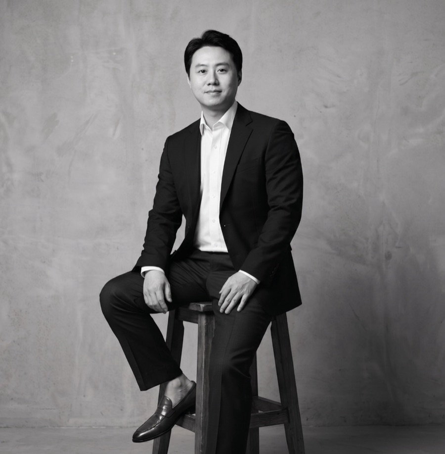

I was born and raised in Seoul, and I've spent the last twenty years building a life in the United States — business school in Philadelphia, a career that keeps me moving between both countries. Somewhere along the way, I became the person friends and colleagues called whenever they were headed to Korea. I'd plan their days, book their clinics, and walk them through the parts of Seoul you only find if someone who loves the city takes you there.
I loved doing it. And I noticed something: the people I hosted didn't just leave with good photos — they left with care they couldn't get at home, and they were stunned by how accessible it was.
I know that gap personally. I've felt the cost and the complexity of getting care in the States — the bills, the waiting, the sense that the system isn't built for you. Korea quietly offers another way: world-class medicine, traditional healing, and a culture that treats a guest as someone to be looked after completely.
There's a Korean word for that kind of care:
It means to attend to someone the way you look after your parents, your elders, an honored guest in your home. Not service rendered for a fee, but devotion. I named this company Mosim because it's the only promise I know how to make: I'll give you exactly what I give the people I love — one person who knows both worlds, handling everything, so you can simply arrive and be cared for.